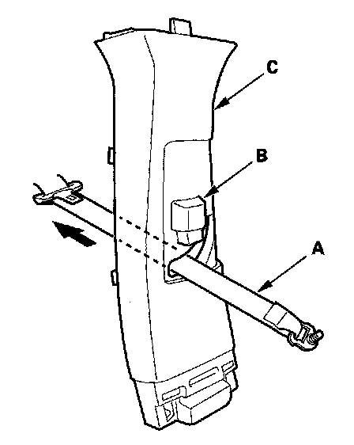

Trim Removal/Installation - Pillar Areas
Trim Removal/Installation - Pillar AreasSpecial Tools Required
KTC trim tool set SOJATP2014 *
* Available through the American Honda Tool and Equipment Program
A-pillar Trim
SRS components are located in this area. Review the SRS component locations and the precautions and procedures before doing repairs or service.
NOTE:
- Follow the A-pillar trim installation procedure carefully; improper installation could cause the side curtain airbags to deploy improperly and possibly cause injury.
- Put on gloves to protect your hands.
- Use the appropriate tool from the KTC trim tool set to avoid damage when removing components.
- Take care not to scratch the trim and panels.
- The upper clip in the A-pillar trim (A) consists of a resin grommet (B) and a metal pin (C). The groove (D) in the grommet secures it to the body panel (E). The shoulder (F) on the grommet is broken during removal, so the clip must be replaced with a new one when the trim is reinstalled.
1. Pull the front door opening seal away from the A-pillar as needed.
2. Hit the surface of the A-pillar trim (A) with a rubber mallet. The clip is located under the top of the A-pillar trim near the "SIDE CURTAIN AIRBAG" mark (B). Hitting the trim surface breaks the shoulder (C) on the grommet (D) and pushes the pin (E) and grommet against the body (F).
NOTE: The clip must be replaced with a new one when the A-pillar trim is reinstalled.
3. Pull the top of the A-pillar trim (A) back by hand to remove the pin (B) from the grommet (C) remaining in the body (D).
NOTE: The edge of the headliner (E) lies between the A-pillar trim and the guide bracket (F) of the trim. The A-pillar trim shouldn't be pulled out too far at a time, or the guide bracket might catch the headliner and bend it.
4. Remove the A-pillar trim (A) by hand to detach the remaining clips, then pull the trim up from the dashboard(B).
5. Remove the grommet from the body.
NOTE: The upper grommet must be replaced with a new one because the grommet is damaged during removal.
6. If the side curtain airbag has been deployed, replace the A-pillar trim with a new one.
7. If the side curtain airbag has not been deployed, check the A-pillar trim (A) and note the following:
- To prevent the side curtain airbags from deploying improperly and possibly causing injury, inspect the A-pillar trim and replace it if it has any of these types of damage:
- Any cracks, deformations, or stress-whitened areas in the A-pillar trim
- Any cracks or stress-whitening in the clip and pin seating surfaces (B)
- Damaged guide bracket (C)
- Replace the upper grommet with a new one because it will be damaged during removal.
- Check if the clips (D) are damaged or stress-whitened, and if replace, replace them with new ones.
8. Before installing the A-pillar trim (A), carefully remove the grommet (B) from the pin (C) on the upper clip.
9. Check the overlap between the headliner and A-pillar trim, and if necessary, adjust it.
10. Carefully reinstall the grommet (A) on the pin (B) and seat them on the A-pillar trim (C) as shown.
11. Reinstall the A-pillar trim (A).
1. Insert the bottom of the trim into the dashboard(B).
2. Place the trim over the A-pillar (C), and fit its upper clip (D), the other clips (E) and the pin (F) into holes (G) in the A-pillar, then lightly push the trim into place.
NOTE:
- Make sure that the side curtain airbag tether (H) is below the clip.
- Make sure the side curtain airbag isn't tucked down under the clips and ribs.
- Apply pressure to the areas of the trim on the upper clip until these clip fittings are felt. If you push too hard, the clip will be damaged, and it will not hold the trim properly.
- Make sure the upper clip portions of the trim don't come off the body by tugging on the trim.
12. Reinstall the front door opening seal.
Special Tools Required
KTC trim tool set SOJATP2014 *
* Available through the American Honda Tool and Equipment Program
B-Pillar Upper/Lower Trim
SRS components are located in this area. Review the SRS component locations and the precautions and procedures before doing repairs or service.
NOTE:
- Put on gloves to protect your hands.
- Take care not to bend or scratch the trim and panels.
- Use the appropriate tool from the KTC trim tool set to avoid damage when removing components.
1. Remove these items:
- Front door sill trim
- Rear door sill trim
- Front door opening seal, as needed
- Rear door opening seal, as needed
2. Slide the front seat fully forward.
3. Remove the B-pillar lower trim (A).
1. Detach the lower clips by pulling the middle of the trim back by hand.
2. While releasing the upper tabs (B), pull the upper portion of the trim back to release the upper hooks (C).
4. Remove the front seat belt lower anchor.
5. Pull the bottom of the B-pillar upper trim (A) back by hand to detach the lower hooks (B).
6. Detach the upper clip by pulling the top of the B-pillar upper trim. Pull the trim down to release the upper hooks (C) from the side curtain airbag B-pillar bracket (D).

7. Pass the front seat belt (A) lower anchor out through a hole in the slider (B), then remove the B-pillar upper trim (C).
8. Install the trim in the reverse order of removal, and note these items:
- Replace any damaged clips (A) with new ones.
- If the side curtain airbag has deployed, replace the B-pillar upper and lower trim and all clips on the trim with new ones.
- To prevent the side curtain airbags from deploying improperly and possibly causing injury, inspect the trim and replace it if it has any of these types of damage:
- Any cracks or deformations in the B-pillar upper trim (B) and the upper hook (C), and any stress-whitened areas in the upper part of the trim
- Any cracks or deformations in the B-pillar lower trim (D), and any breakages in the part (E) fitted with the B-pillar upper trim
- Any cracks or stress-whitened areas in the clips seating surface (F)
- Replace any damaged parts with new ones.
- Make sure the top of the trim overlaps with the headliner correctly.
- Make sure the pin (G) on the front seat belt shoulder anchor adjuster (H) and the hole (I) on the back of the slider are engaged when installing the B-pillar upper trim.
- Make sure the trim hook is installed into the side curtain airbag B-pillar bracket securely.
- Push the clip and hooks into place securely.
- Before installing the anchor bolt, make sure there are no twists or kinks in the seat belt.
Special Tools Required
KTC trim tool set SOJATP2014 *
* Available through the American Honda Tool and Equipment Program
Quarter Pillar Trim
SRS components are located in this area. Review the SRS component locations and the precautions and procedures before doing repairs or service.
NOTE:
- Follow the quarter pillar trim installation procedure carefully; improper installation could cause the side curtain airbag to deploy improperly and possibly cause injury.
- Put on gloves to protect your hands.
- Use the appropriate tool from the KTC trim tool set to avoid damage when removing components.
- Take care not to scratch the trim and panels.
- The upper clip in the quarter pillar trim (A) consists of a grommet (B) and a pin (C). The grommet expanded with the pin secures it to the body panel (D). The projections (E) on the pin is broken during removal, so the clip must be replaced with a new one when the trim is reinstalled.
1. Remove these items:
- Rear door opening seal, as needed
- Tailgate weatherstrip, as needed
- Second row seat belt lower anchor
- Seat belt exit C-pillar cap
- Seat belt exit D-pillar cap
- With power tailgate: Left tailgate side trim
2. Remove the upper portion of the rear side trim panel, as needed.
3. With power tailgate: Use a flat-tip screwdriver (A) to pry the clip (B) downward from the power tailgate rod (C), then release the rod from the pivot bracket (D) and push it in the quarter pillar trim (E). Do not remove the clip from the rod.
4. Hit the surface of the quarter pillar trim (A) with a rubber mallet. The clip is located in the top of the C-pillar near the "SIDE CURTAIN AIRBAG" mark (B). Hitting the trim surface breaks the projections (C) on the pin (D) and pushes it into the grommet (E) and against the body (F).
NOTE: The clip must be replaced with a new one when the quarter pillar trim is reinstalled.
5. Hit the surface of the quarter pillar trim (A) with a rubber mallet. The clip is located in the seat belt exit D-pillar cap opening. Hitting the trim surface breaks the projections (B) on the pin (C) and pushes it into the grommet (D) and against the body (E).
NOTE: The clip must be replaced with a new one when the quarter pillar is reinstalled.
6. While pulling the upper portion of the rear side trim panel (A) back, detach the clips, then release the lower portion of the quarter pillar trim (B) away from the body.
NOTE: The quarter pillar is still fastened with two upper clips located in the middle of it.
7. While pulling the lower portion of the quarter pillar trim (A) away from the body, hit the surface of the quarter pillar trim (A) with a rubber mallet. The clip is located in the rear of the hollow (B) in the trim. Hitting the trim surface breaks the projections (C) on the pin (D) and pushes it into the grommet (E) and against the body (F).
NOTE: The clip must be replaced with a new one when the quarter pillar trim is reinstalled.
8. Slide the upper clip portion (A) of the quarter pillar trim (B) up at a 45 ° angle to remove the trim from the clip. The clip can be removed once the trim is clear.

9. Remove the quarter pillar trim (A). If equipped with the premium sound system, disconnect the D-pillar speaker connector (B). If equipped with power tailgate, pull the power tailgate rod (C) out of the slit (D) in the quarter pillar trim.
10. Hit the remaining upper clip (A) with a rubber mallet. Hitting the clip breaks the projections (B) on the pin (C) and pushes it into the grommet (D) and against the body (E).
NOTE: The clip must be replaced with a new one when the quarter pillar trim is reinstalled.
11. If the side curtain airbag has not deployed, remove the quarter pillar trim and all the clips on the trim with new ones.
12. If the side curtain airbag has not deployed, remove the upper clips (A) from the removed quarter pillar trim (B) and discard them. Then check the trim and note the following:
- To prevent the side curtain airbags from deploying improperly and possibly causing injury, inspect the quarter pillar trim and replace it if it has any of these types of damage:
- Any cracks, deformations, or stress-whitened areas in the quarter pillar trim
- Any cracks or stress-whitened areas in the clip seating surfaces (C, D)
- If any of the lower clips (E) are damaged or stress-whitened, replace them.
- Replace the upper clips (A) with new ones.
13. Before installing the quarter pillar trim (A), whether replaced or reinstalled, temporarily remove the new clips (B).
14. Check the overlap between the headliner and quarter pillar trim, and if necessary, adjust it.
15. Carefully reinstall the clips (A) to the quarter pillar trim (B). Make sure that the grommet (C) is nearest to the top of the pin (D) as shown.
16. Reinstall the quarter pillar trim (A).
1. If equipped with the premium sound system, reconnect the D-pillar speaker connector (B).
2. If equipped with power tailgate, pass the power tailgate rod (C) through the slit (D) in the quarter pillar trim.
3. Place the trim over the C-pillar/D-pillar (E), and fit its upper clip (F), and all of the other clips (G) into holes (H) in the body, then lightly push the trim into place.
NOTE:
- Make sure the side curtain airbag isn't tucked down under the clips and ribs.
- Apply pressure to the areas of the trim on the upper clips until these clip fittings are felt. If you push too hard, the clip will be damaged, and it will not hold the trim properly.
- Make sure the upper clip portions of the trim don't come off the body by tugging on the trim.
17. With power tailgate: Set the clip (A) on the original position, then reattach the power tailgate rod (B) on the pivot bracket (C) by pushing the rod onto the pivot.
18. Reinstall all of the removed parts.